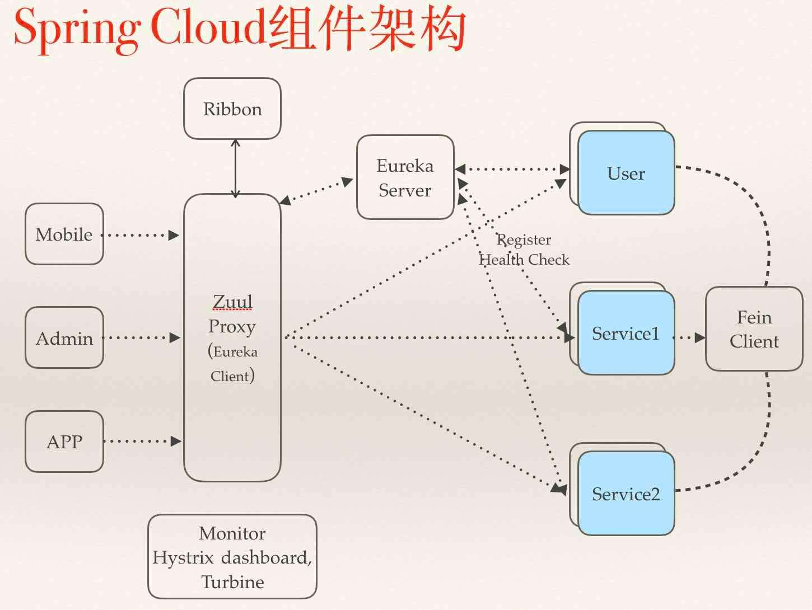

1. 简介¶
API网关作为微服务系统提供对外资源的入口，起到了对服务资源进行统一管理的作用。除了要实现请求路由、负载均衡、校验过滤等功能外，还需要与服务治理框架结合、请求转发时的熔断机制、服务聚合等。Spring cloud Zuul是spring微服务架构提供的API网关解决方案，它通过与Eureka注册中心整合，可以方便的获取到系统中的服务信息。Zuul作为微服务系统的入口可以方便的管理服务资源，对请求进行统一的管理，可以添加拦截校验等逻辑。
2. 快速入门¶
1.创建一个Spring Boot工程，命名为api-gateway，并在pom.xml中添加如下依赖:
- <dependency>
- <groupId>org.springframework.cloud</groupId> <artifactId>spring-cloud-starter-zuul</artifactId>
</dependency> <dependency>
<groupId>org.springframework.cloud</groupId> <artifactId>spring-cloud-starter-eureka</artifactId></dependency>
- spring-cloud-starter-zuul除包含zuul-core外还包括:
- spring-cloud-starter-hystrix: 该依赖主要实现对网关服务转发的保护机制，通过线程隔离和断路器，防止微服务故障引发API网关资源无法释放。 spring-cloud-starter-ribbon: 网关服务在进行路由转发时实现负载均衡 spring-cloud-starter-actuator: 提供微服务管理端点。Zuul还提供了/routes端点返回当前所有路由规则
2.创建主类
@EnableZuulProxy @SpringBootApplication public class GatewayApplication {
- public static void main(String[] args) {
- SpringApplication.run(GatewayApplication.class, args);
}
}
3. 常用配置¶
3.1. 请求路由¶
zuul.routes.<自定义路由名>.path: 设置请求匹配路由 zuul.routes.<自定义路由名>.serviceId: 设置匹配路由将会发送到的微服务 zuul.routes.<自定义路由名>.url: 设置匹配路由将会发送到的url zuul.ignored-services: 设置匹配表达式的Service Zuul将不会建立默认路由规则 zuul.ignored-patterns: 设置忽略匹配路径 zuul.retryable: 设置全局是否关闭请求重试 zuul.routes.<route>.retryable: 设置指定路由是否关闭请求重试
3.2. 请求过滤¶
1.添加zuul过滤器类。继承ZuulFiter:
/** * 添加token和label到请求header * * @author flyleft */ public class HeaderWrapperFilter extends ZuulFilter {
private static final Logger LOGGER = LoggerFactory.getLogger(HeaderWrapperFilter.class);
private GatewayProperties gatewayHelperProperties;
- public HeaderWrapperFilter(GatewayProperties gatewayHelperProperties) {
- this.gatewayHelperProperties = gatewayHelperProperties;
}
private static final int HEADER_WRAPPER_FILTER = -1;
- /**
- 过滤器类型，决定过滤器在那个生命周期中执行。pre表示在被路由之前执行，route表示在路由请求时被调用，post表示在route和error过滤器之后被调用，error表示处理请求发生错误时被调用
*/
@Override public String filterType() {
return “pre”;}
@Override public int filterOrder() {
return 0;}
@Override public boolean shouldFilter() {
return true;}
@Override public Object run() {
RequestContext ctx = RequestContext.getCurrentContext(); HttpServletRequest request = ctx.getRequest(); String token = (String) request.getAttribute(HEADER_JWT); if (StringUtils.isEmpty(token)) {
LOGGER.info(“Request get empty jwt , request uri: {} method: {}”, request.getRequestURI(), request.getMethod());
- } else {
ctx.addZuulRequestHeader(HEADER_TOKEN, token); if (gatewayHelperProperties.isEnabledJwtLog()) {
- LOGGER.info(“Request get jwt , request uri: {} method: {} JWT: {}”,
- request.getRequestURI(), request.getMethod(), token);
}
} return null;
}
2.将过滤器添加到IOC容器中，创建配置类:
/** * 自定义configuration配置类 * * @author flyleft */ @Configuration @EnableConfigurationProperties(GatewayProperties.class) public class CustomZuulConfig {
@Bean public HeaderWrapperFilter headerWrapperFilter(GatewayProperties gatewayHelperProperties) {
return new HeaderWrapperFilter(gatewayHelperProperties);}
}
3.3. 路径匹配¶
路径匹配当匹配到一个满足路径表达式时匹配结束。因此需要保证配置文件读取到有序，需要使用YAML配置文件
?: 表示匹配任意单个字符 : 表示匹配任意数量的字符 *: 表示匹配任意数量的字符，支持多级目录
3.4. 路由前缀¶
zuul.prefix: 为全局的路由规则设置前缀信息 zuul.stripPrefix: 关闭移除代理前缀的动作 zuul.routes.<route>.strip-prefix: 关闭指定路由移除代理前缀动作
3.5. Cookie与头信息¶
zuul.sensitiveHeaders: 设置Zuul的敏感头信息，默认包括Cookie、Set-Cookie、Authorization。设置为敏感头信息的内容将在路由时被网关过滤。 zuul.routes.<router>.customSensitiveHeaders: 设置指定路由开启自定义敏感头，将去除默认敏感头设置 zuul.routes.<router>.sensitiveHeaders: 设置指定路由的敏感头
3.6. 重定向问题¶
系统内部重定向跳转，Location指向具体服务实例地址，导致请求没有通过网关控制。
zuul.addHostHeader: 设置请求转发前设置Host头信息，标识最初的服务端请求地址。